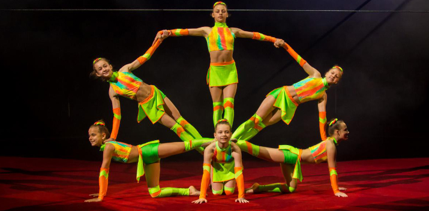

Національний цирк України оголошує про початок прийому заявок на участь у 2-му
«Міжнародному дитячому фестивалі циркового мистецтва», який триватиме з 25 по 28
травня 2017 року.Фестиваль присвячується вшануванню пам’яті видатного діяча цирко-
вого мистецтва, Народного артиста України Зайця Бориса Михайловича та 55-річчю "Ки-
ївської муніципальної академії естрадного та циркового мистецтва" ім. Л.Утьосова.
До складу журі Фестивалю запрошені кращі митці циркового мистецтва: Петро Дубин-
ський - арт-консультант (артистичний директор) і член журі багатьох міжнародних фести-
валів циркового мистецтва, включаючи фестивалі в Італії, Іспанії, Франції, КНР, Росії,
Україні, В’єтнамі, Чилі, Мексиці та в інших країнах, Лоліта Ліпінська - директор, художній
керівник Ризького цирку (Латвія), Володимир Шабан - директор Білоруського цирку
(Білорусія), Урс Пілс – віце-президент Міжнародного фестивалю цирку в Монако, Тьєррі
Оутрілла – режисер “Мулен Руж”, (Франція) та інші.
Державне підприємство «Національний цирк України» зобов’язується забезпечити зу- стріч учасників фестивалю у місті Києві, а також надати іногороднім гостям Фестивалю безоплатне проживання керівникам та учасникам Фестивалю у 2-х та 3-місних номерах з усіма зручностями.На час проведення фестивалю, можливе забезпечення харчуванням керівників, учасників фестивалю та їх батьків, двічі на добу за їх власні кошти.
Заявки на участь у Міжнародному дитячому фестивалі надсилайте на електронну пошту national-cirkus@ukr.net, або за тел. факсом: (+38044236-39-39) відповідальна особа — ст. адміністратор Кобиляш Тетяна Іванівна. Скачати приклад заявки можна тут>>
Програма Фестивалю: 25 травня 2017 року - заїзд учасників Фестивалю, установка, монтаж обладнання, випро- бування, репетиції номерів; 26 травня 2017 року - урочисте відкриття, відбірковий тур Фестивалю; 27 травня 2017 року о 16:00 відбудеться Гала-шоу Міжнародного дитячого фестивалю циркового мистецтва.
Державне підприємство «Національний цирк України» зобов’язується забезпечити зу- стріч учасників фестивалю у місті Києві, а також надати іногороднім гостям Фестивалю безоплатне проживання керівникам та учасникам Фестивалю у 2-х та 3-місних номерах з усіма зручностями.На час проведення фестивалю, можливе забезпечення харчуванням керівників, учасників фестивалю та їх батьків, двічі на добу за їх власні кошти.
Заявки на участь у Міжнародному дитячому фестивалі надсилайте на електронну пошту national-cirkus@ukr.net, або за тел. факсом: (+38044236-39-39) відповідальна особа — ст. адміністратор Кобиляш Тетяна Іванівна. Скачати приклад заявки можна тут>>
Програма Фестивалю: 25 травня 2017 року - заїзд учасників Фестивалю, установка, монтаж обладнання, випро- бування, репетиції номерів; 26 травня 2017 року - урочисте відкриття, відбірковий тур Фестивалю; 27 травня 2017 року о 16:00 відбудеться Гала-шоу Міжнародного дитячого фестивалю циркового мистецтва.